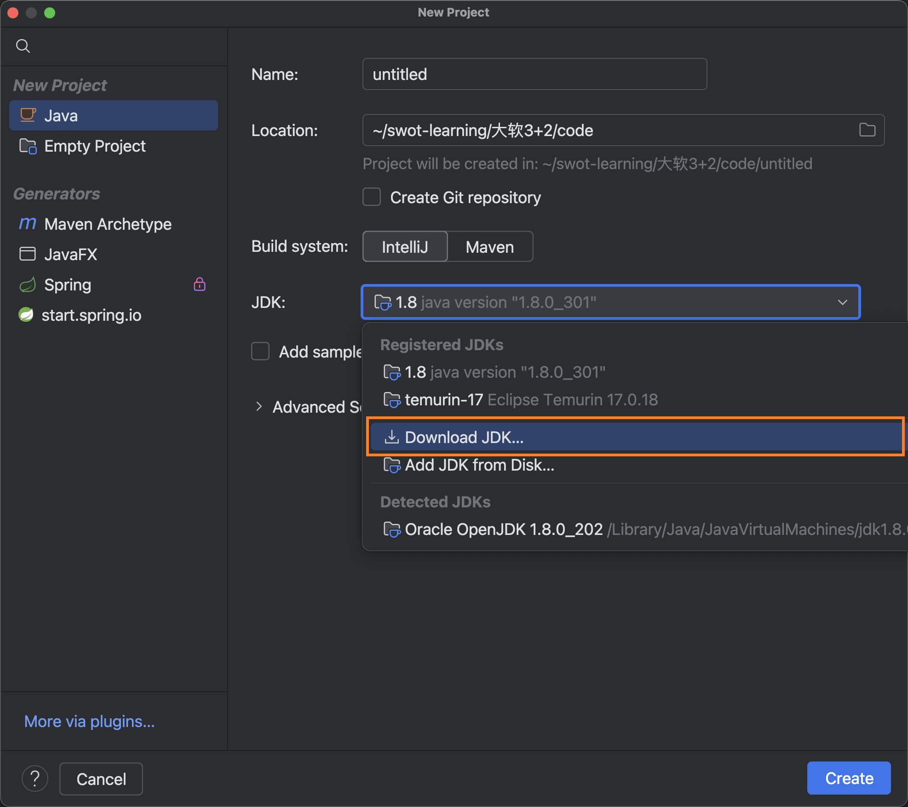
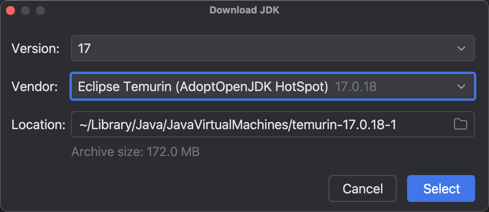
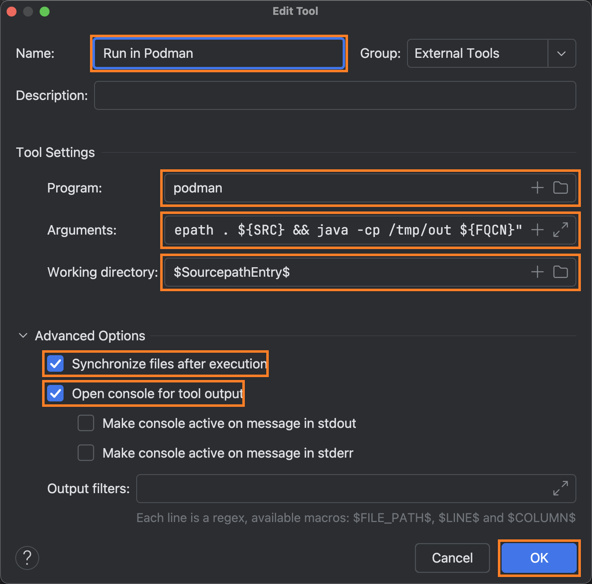

实验一：环境与项目初始化 (4学时)
-
目标：搭建 JDK 与 IntelliJ IDEA 环境，完成项目骨架搭建。
安装开发环境 IntelliJ IDEA 和 JDK 17
idea 下载地址：（注意选择自己电脑相应 cpu 架构的安装包） https://www.jetbrains.com/idea/download/
在 Idea 创建新项目时可以直接安装 java jdk17，参考下图：


这样就可以使用 IDEA 创建项目，进行 java 程序的开发了，
// @edit code/testBasicSyntax/src/EnvironmentDemo.java
public class EnvironmentDemo {
public static void main(String[] args) {
System.out.println("========= 环境测试 =========");
// 验证运行操作系统（如果是 Linux，说明 Podman 成功了）
String os = System.getProperty("os.name");
System.out.println("当前运行操作系统: " + os);
// 验证 JDK 版本
String version = System.getProperty("java.version");
System.out.println("当前 JDK 版本: " + version);
// 验证环境变量
String user = System.getProperty("user.name");
System.out.println("当前容器用户: " + user);
if ("Linux".equalsIgnoreCase(os)) {
System.out.println("✅ 成功！代码正在 Podman 容器内运行。");
} else {
System.out.println("❌ 警告：代码仍在 macOS 本地运行。");
}
System.out.println("==================================");
}
}========= Podman 环境测试 ========= 当前运行操作系统: Mac OS X 当前 JDK 版本: 17.0.18 当前容器用户: swot ❌ 警告：代码仍在 macOS 本地运行，请检查 Run on 设置。 ==================================
先说 podman 容器运行注意事项
|
| 下面在 podman 容器中运行 java 程序是提高的内容，初学者可以忽略！ |
容器介绍：docker vs podman
用一句话概括：容器是带上所有“行李”的一键式运行环境。
如果展开成三个关键词，它的作用就是：
-
封装：把代码和它运行所需的依赖（库、环境、配置）像罐头一样封在一起。
-
隔离：让应用像住在独立公寓里一样，互不干扰，不污染宿主机系统。
-
一致：确保程序在开发电脑、测试服务器和云端运行得完全一模一样。
一言以蔽之： 容器消灭了 “在我电脑上明明能跑” 这种程序员最头疼的借口。
| 维度 | Docker (传统霸主) | Podman (红帽新锐) |
|---|---|---|
架构模型 |
C/S 架构，依赖后台守护进程 |
典型的 Fork-Exec 模型，无守护进程 (Daemonless) |
权限管理 |
默认需要 Root 权限，安全风险相对较高 |
原生支持 Rootless 模式，普通用户即可运行 |
Kubernetes 集成 |
需通过额外工具转换 |
原生支持 Pod 概念，可直接导出/导入 Kubernetes YAML |
系统集成 |
使用自带的 Restart Policy 自动重启 |
完美集成 systemd，可作为原生系统服务管理 |
命令行兼容性 |
标准 |
与 Docker CLI 几乎完全一致 (alias docker=podman) |
生态与桌面端 |
生态极度丰富，Docker Desktop 在 Win/Mac 体验领先 |
社区快速增长，Podman Desktop 正在发力 |
镜像存放 |
由 Docker Daemon 统一管理存储 |
存放在用户家目录（Rootless）或 /var/lib/containers |
WSL2 安装容器环境 podman — 重点
什么是 WSL2？ (地基/虚拟化引擎)
-
全称： Windows Subsystem for Linux 2。
-
本质： 它是微软开发的一个 Windows 功能组件。
-
功能： 它在 Windows 内部提供了一个真实的 Linux 内核。 它负责处理硬件资源（CPU、内存、网络）的分配，让 Linux 能够直接运行在 Windows 上。
-
特点： 它本身不是一个可以让你操作的界面，它只是一个运行环境。没有它，Linux 系统无法在 Windows 上跑起来。
检查 windows 虚拟化环境状态并安装 WSL2 引擎
请在你的 Windows 搜索栏输入 PowerShell， 右键点击并选择 “以管理员身份运行”，打开命令行工具。
查看 BIOS 是否开启虚拟化支持
(Get-CimInstance -ClassName Win32_Processor).VirtualizationFirmwareEnabled
# 返回 True 表示 BIOS 已开启虚拟化支持。
# 或者进入「任务管理器」-> 「性能」-> 「CPU」-> 「虚拟化」是否为「已启用」如果是“已禁用”，就必须进 BIOS 了。
WSL2 和 Podman 实际上是在 Windows 内部运行了一个极简的虚拟机。为了让这个虚拟机运行得飞快（接近原生性能），CPU 必须从硬件层面提供支持：
-
Intel 处理器： 叫 VT-x (Virtualization Technology)。
-
AMD 处理器： 叫 SVM (Secure Virtual Machine)。
如何进入 BIOS 并开启？ 不同品牌的笔记本进入方式略有不同，但逻辑是一样的：
第一步：进入 BIOS
-
常见热键： 关机状态下按下电源键，然后不停地狂按
F2（联想、戴尔、华硕等常见）或F10(HP) 或Del(微星、组装机)。 -
通用方法（Windows 内）：
设置→系统→恢复→高级启动→立即重新启动。重启后选择疑难解答→高级选项→UEFI 固件设置。
第二步：找到开关（通常在 Advanced 或 Configuration 菜单下）
进入 BIOS 后，寻找类似以下的字样并将其设置为 Enabled：
-
Intel 平台：
Intel Virtualization Technology或VT-x。 -
AMD 平台：
SVM Mode或Secure Virtual Machine。 -
某些笔记本： 可能会藏在
Security→Virtualization路径下。
第三步：保存退出
通常按 F10 保存并退出。
查看 windows 是否安装了适用于 Linux 的 Windows 子系统
wsl -l -v你可能会看到的三种结果：
-
列表为空 (No distributions)
-
提示：适用于 Linux 的 Windows 子系统没有已安装的分发版。
-
解读： 你的 WSL2 地基已经打好了，但是上面没盖任何房子（没装 Ubuntu，也没装 Podman）。
-
状态： 完美！这正是你想要的状态。你现在可以直接去安装 Podman，它会创建自己的专属环境。
-
-
出现列表，版本为 2
-
提示：NAME: podman-machine-default, STATE: Running, VERSION: 2
-
解读： 你已经安装过 Podman 且它正在运行，它用的是 WSL2 引擎。
-
状态： 一切正常，你可以开始写 Java 代码了。
-
-
错误提示：'wsl' 不是内部或外部命令 或 未安装适用于 Linux 的 Windows 子系统。
-
解读： 你的 Windows 还没有开启 WSL 功能。
-
操作： 有两种方式来开启
-
方式一：要执行 dism.exe 命令来开启 (我没使用方式一，用了方式二)
直接复制在 power shell 中执行# 开启 WSL 基础功能 dism.exe /online /enable-feature /featurename:Microsoft-Windows-Subsystem-Linux /all /norestart # 开启 WSL2 必需的虚拟机平台 dism.exe /online /enable-feature /featurename:VirtualMachinePlatform /all /norestart # 提示：请立即重启电脑！ Write-Host "操作完成！请手动重启电脑以生效。" -ForegroundColor Yellow -
方式二：直接运行
wsl --install --no-distribution（这会开启 WSL 但不装 Ubuntu）。方式二运行后显示PS C:\Windows\system32> wsl --install --no-distribution 正在下载: 适用于 Linux 的 Windows 子系统 2.6.3 正在安装: 适用于 Linux 的 Windows 子系统 2.6.3 已安装 适用于 Linux 的 Windows 子系统 2.6.3。 正在安装 Windows 可选组件: VirtualMachinePlatform 部署映像服务和管理工具 版本: 10.0.26100.5074 映像版本: 10.0.26200.7840 启用一个或多个功能 [==========================100.0%==========================] 操作成功完成。 请求的操作成功。直到重新启动系统前更改将不会生效。
再运行 ws -l -v 就会显示 wsl 底座已经ok了PS C:\Windows\system32> wsl -l -v 适用于 Linux 的 Windows 子系统没有已安装的分发。 可通过安装包含以下说明的分发来解决此问题： 使用“wsl.exe --list --online' ”列出可用的分发 和 “wsl.exe --install <Distro>” 进行安装。
-
-
| 一定一定记得要重启 Windows 操作系统！！！ |
再次确认 wsl 版本为 2
PS C:\Windows\system32> wsl --status 默认版本: 2 当前计算机配置不支持 WSL1。 若要使用 WSL1，请启用“Windows Subsystem for Linux”可选组件。
wsl --set-default-version 2
删除 ubuntu Linux 系统
如果你已经手快执行了 wsl --install 并且 Ubuntu 已经出现在你的菜单里了，也不用重装系统，直接在 PowerShell 里输入这行命令就能把它彻底删掉：
wsl --unregister Ubuntu这样你就回到了一个“只有 WSL2 引擎，没有 Ubuntu”的纯净状态了。
在 WSL2 引擎下安装 podman
-
下载地址
-
找最新的 .exe 安装文件
-
安装完成后，在 PowerShell 输入
初始化 podman 机器并开启# 限制 Podman 虚拟机使用 4G 内存，2 核 CPU podman machine init --cpus 2 --memory 4096 # 可以再改 podman machine set --cpus 4 --memory 4096 # 查看设置 > podman machine inspect --format '{{.Resources.CPUs}} CPU, {{.Resources.Memory}} MB' # 查看 podman 虚拟机 podman machine list # 启动 podman 虚拟机 podman machine start # 不用了就释放计算机内存资源 podman machine stop
直接导入 podman rootfs 方式
如果 podman machine init 自动下载太慢了，直接下载镜像再导入。
https://github.com/containers/podman-wsl-fedora/releases
# 彻底清理旧的失败记录
podman machine rm -f
# 手动指定你下载好的那个 141MB 的文件
podman machine init --image "D:\rootfs.tar.xz"
# 启动
podman machine startPS C:\Windows\system32> podman.exe machine list NAME VM TYPE CREATED LAST UP CPUS MEMORY DISK SIZE podman-machine-default* wsl 8 minutes ago Currently running 8 2GiB 100GiB
podman 安装 JDK17
# 拉取镜像 (使用 Eclipse Temurin 发行版)
podman pull eclipse-temurin:17-jdk
# 启动一个交互式容器来测试 java 版本
podman run -it --rm eclipse-temurin:17-jdk java -versionopenjdk version "17.0.18" 2026-01-20 OpenJDK Runtime Environment Temurin-17.0.18+8 (build 17.0.18+8) OpenJDK 64-Bit Server VM Temurin-17.0.18+8 (build 17.0.18+8, mixed mode, sharing)
IDEA 使用 podman JDK17 运行 java 项目
IntelliJ IDEA Community (社区版) 默认不支持原生的 "Run Targets" 功能。 本方法通过 External Tools (外部工具) 模拟旗舰版的远程运行体验，实现“本地编码、容器运行”的无缝衔接。
社区版本 IDEA 运行 podman 容器 jdk17 方法
-
External Tool 参数设置
请在 IDEA 的
Settings→Tools→External Tools中添加以下配置：-
Program: podman
-
Arguments: run --rm -i -v "$SourcepathEntry$":/src -w /src -e DIR="$FileDirRelativeToSourcepath$" -e NAME="$FileNameWithoutExtension$" -e FILE="$FileName$" eclipse-temurin:17-jdk bash -c "if [ x${DIR} = x ] || [ x${DIR} = x. ]; then SRC=${FILE}; FQCN=${NAME}; else SRC=${DIR}/${FILE}; S=/; P=.; FQCN=${DIR//${S}/${P}}.${NAME}; fi; mkdir -p /tmp/out && javac -d /tmp/out -sourcepath . ${SRC} && java -cp /tmp/out ${FQCN}"
-
Working directory: $SourcepathEntry$

-
-
Arguments 命令详解:
-
run --rm: 容器运行结束即销毁，保持系统整洁。 -
-i: 支持交互模式，如果程序中使用Scanner等读取输入，控制台可正常交互。 -
-v "$SourcepathEntry$":/src: 核心逻辑。将 IDEA 的源码根目录映射到容器/src，确保javac能根据包名（Package）正确索引依赖类。 -
-w /src: 设置容器工作目录为源码根目录。 -
-e DIR/NAME/FILE: 通过环境变量将 IDEA 宏（相对路径、文件名、无后缀名）传入容器，供后续 Shell 脚本调用。 -
bash -c "…": 在容器内启动 Bash 解释器以执行复杂的条件判断逻辑：-
包路径自动化: 脚本会自动检测
DIR是否为空。若不为空，则利用${DIR//${S}/${P}}语法将路径分隔符/替换为.，从而动态构建出正确的全限定类名 (FQCN)。 -
编译隔离:
mkdir -p /tmp/out在容器内存中创建临时目录。 -
精准编译:
javac -d /tmp/out将编译产物输出到临时目录，避免在宿主机源码文件夹下生成.class文件，保持代码目录纯净。 -
动态运行:
java -cp /tmp/out ${FQCN}自动指向编译输出目录并运行生成的类。
-
-
-
快捷键绑定 (Keymap)
为了实现“一键运行”，建议进行以下操作：
-
打开
Settings→Keymap。 -
搜索
Run in Podman。 -
右键选择
Add Keyboard Shortcut，建议绑定为Option + R(Mac) 或Alt + R(Win)。
-
-
验证测试
查看程序运行结果，即可验证是否在 podman 中运行成功。// @edit code/testBasicSyntax/src/EnvironmentDemo.java public class EnvironmentDemo { public static void main(String[] args) { System.out.println("========= 环境测试 ========="); // 验证运行操作系统（如果是 Linux，说明 Podman 成功了） String os = System.getProperty("os.name"); System.out.println("当前运行操作系统: " + os); // 验证 JDK 版本 String version = System.getProperty("java.version"); System.out.println("当前 JDK 版本: " + version); // 验证环境变量 String user = System.getProperty("user.name"); System.out.println("当前容器用户: " + user); if ("Linux".equalsIgnoreCase(os)) { System.out.println("✅ 成功！代码正在 Podman 容器内运行。"); } else { System.out.println("❌ 警告：代码仍在 macOS 本地运行。"); } System.out.println("=================================="); } }podman 运行结果========= Podman 环境测试 ========= 当前运行操作系统: Linux 当前 JDK 版本: 17.0.18 当前容器用户: root 成功！代码正在 Podman 容器内运行。 ==================================
|
本期资料未实现
|
实际开发与验证的落地建议
如果没有 IDEA 旗舰版本，实际开发与验证的流程建议如下：
-
日常写代码/Debug：直接用本地 JDK 17，享受最快的响应速度。
-
最后验证：写完一个阶段了，按下你配好的 Option + R（Podman），看一眼在 Linux 下报不报错。
这叫“本地开发，容器验证”，是性价比最高的工作流。
|
深度思考：为什么坚持在容器中运行 Java？
-
彻底抹平“环境熵增”
“本地环境是一块不断被污染的实验田，而容器是永恒纯净的无菌室。”
— 架构师思维-
宿主机解耦：你的 Mac/Windows 不需要安装数据库、不需要配置复杂的环境变量。从而解决“在我机器上能跑”的玄学问题。
-
版本隔离：你可以同时运行 JDK 8、11、17、21 的不同项目，它们在各自的容器里互不干扰。
-
-
预演“云原生”发布流程
现代企业应用最终都会跑在 Kubernetes (K8s) 或 Docker Swarm 上。
-
镜像对齐：你在 Podman 里用的
eclipse-temurin:17-jdk镜像，通常就是生产环境的基础镜像。 -
配置对齐：在容器里跑代码，会强制你思考：我的配置文件在哪里？我的日志往哪儿输出？我的内存限制是多少？这些都是线上运行的核心问题。
-
-
极速入职与迁移 (Onboarding)
想象一下：一个新同事加入项目。
-
传统方式：配置 JDK、安装 Maven、设置环境变量、解决 Mac M1/M2 兼容性问题… 耗时一天。
-
容器方式：安装 Podman，执行你的
External Tool命令。耗时 5 分钟。
-
-
社区版“折腾”的附加价值
-
在 Ultimate 旗舰版里，这一切都是自动的，你会觉得理所当然；
-
在 Community 社区版里，你手写了
mount挂载、working dir切换、sh -c脚本。 -
这些“折腾”让你真正理解了：IDE 是如何通过宿主机与 Linux 虚拟机（Podman Machine）进行通信的。 这种底层感知力，才是最值钱的。
-
实验二：数据模型与实体类开发 (4学时)
-
目标：根据需求设计实体类及自定义异常类。
实验目标：学会定义一个标准的“实体类”（Entity），用于存储门禁系统中的用户信息。
1. 什么是实体类？
在门禁系统中，我们需要一个东西来代表“人”。实体类就像一张电子入职登记表，把一个人的信息打包在一起。
2. 标准的 User 类要求
为了保证数据的安全，我们要遵循上一节学的“封装”原则：
1. 属性全部私有 (private)。
2. 提供公共的 Getter/Setter 方法。
3. 提供一个无参构造方法和一个全参构造方法。
3. 代码实现
class User 用户实体类
/**
* 用户实体类：代表一个拥有门禁卡的人
*/
public class User {
private String id; // 工号
private String name; // 姓名
private String cardId; // 门禁卡号
private boolean isActive; // 账户是否激活
// 无参数构造方法（Java 习惯，方便以后框架使用）
public User() {
}
// 全参数构造方法（方便一句话创建用户）
public User(String id, String name, String cardId, boolean isActive) {
this.id = id;
this.name = name;
this.cardId = cardId;
this.isActive = isActive;
}
// Getter 和 Setter（就像开关，外界通过它们读写数据）
public String getName() {
return name;
}
public void setName(String name) {
this.name = name;
}
public String getCardId() {
return cardId;
}
public void setCardId(String cardId) {
this.cardId = cardId;
}
// ... id 和 isActive 的 Getter/Setter 省略，实际开发中需补全
}关于 User 类小结
private + Getter|Setter 是 Java 的“潜规则”，虽然写起来累，但可以保护数据不被乱改（例如可以在 setCardId 里加逻辑，长度不对就不给存）。
在 IDEA 中演示 Alt + Insert 快捷键自动生成这些代码，学生会觉得很神奇，从而降低抗拒感。
class DoorSystemException 门禁系统异常类代码实现
/**
* 自定义异常：专门处理门禁系统的异常情况
*/
public class DoorSystemException extends Exception {
public DoorSystemException(String message) {
super(message); // 把错误信息传给父类去处理
}
}实验三：系统逻辑接口设计 (6学时)
-
目标：利用接口和抽象类定义门禁系统的核心业务逻辑。
实验四：单元测试与验证 (4学时)
-
目标：编写测试类，对功能模块进行逻辑覆盖测试。
实验五：认证算法实现 (6学时)
-
目标：实现门禁系统的核心认证算法及权限校验。
实验六：持久化层升级 (6学时)
-
目标：将原有的文件存储或内存存储升级为 JDBC 数据库存储。
实验七：系统集成与发布 (6学时)
-
目标：完成模块整合，开发主程序交互逻辑，提交最终成果。